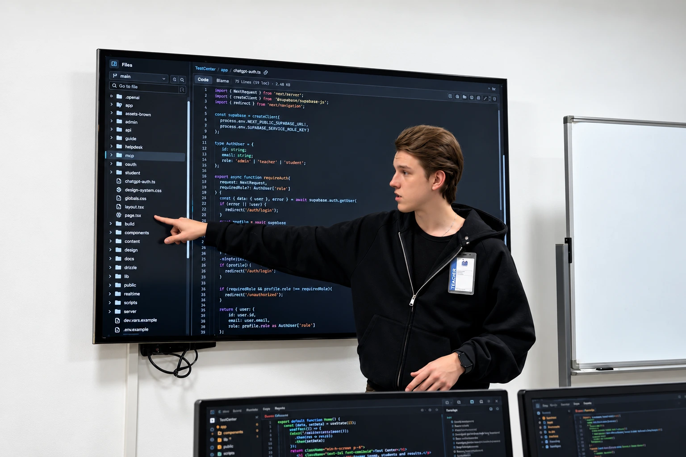
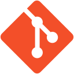
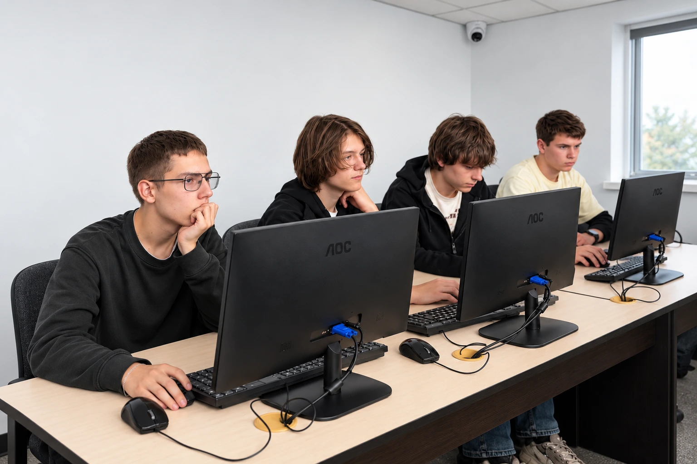

Первый шаг в
программирование
Освойте основы кода и современные инструменты разработки. Достаточно базового владения компьютером и желания учиться.
Познакомьтесь с Академией и узнайте о программе.

чтобы освоить новую профессию
практики в программе
проектов для портфолио
Начните с основ или расширьте свои навыки — программа подойдёт для разных точек входа.
Освойте основы кода и современные инструменты разработки. Достаточно базового владения компьютером и желания учиться.
Получите практические навыки разработки, создайте портфолио и подготовьтесь к старту в IT с поддержкой Академии.
Уже знакомы с IT? Научитесь интегрировать AI в свою работу и создавать более сложные современные продукты.
Полный цикл разработки: от идеи и AI-прототипа до приложения, облачной инфраструктуры и автономных AI-агентов.
Фундаментальные знания разработки и современный AI-стек — в одной программе.
16 тем в программеСкачать программуЧЕМУ ВЫ НАУЧИТЕСЬ
Создавать современные адаптивные интерфейсы на HTML, CSS, JavaScript и React. Работать с Git и GitHub.
Проектировать серверную логику на Python и FastAPI, писать SQL-запросы и работать с базами данных.
Подключать большие языковые модели через API и строить RAG-системы для работы с документами и базами знаний.
Разрабатывать AI-агентов, которые выполняют многоступенчатые задачи, и применять AI на разных этапах создания продукта.
Проектировать облачную архитектуру, контейнеризировать приложения и настраивать CI/CD.
Писать чистый код, тестировать приложения, проводить код-ревью, соблюдать принципы безопасности и работать в команде.
Здесь собраны ключевые навыки курса. Полный учебный план — в программе Академии.
Учитесь использовать AI на всех этапах разработки: исследовать идеи, создавать прототипы, писать и проверять код.
AI в работе над идеями и цифровыми продуктами.
AI-инструмент в процессе разработки.
Редактор кода с возможностями AI.
AI-помощник при работе с кодом.

GitРеальные задачи, код-ревью и менторство специалистов с опытом в IT. Разбирайте технологии через практические кейсы.
Применяйте знания в задачах от IT-компаний, учитесь командной работе и постепенно собирайте собственное портфолио.
Оборудованные аудитории, рабочие места с компьютерами, живые занятия, мастер-классы и воркшопы экспертов.
Коммуникация, командная работа, презентация проектов и English Speaking Club — для общения и собеседований в IT.
Познакомьтесь с Академией и узнайте о программе.
К концу обучения у вас будет портфолио собственных работ и навыки для создания продуктов с AI.
Создаю цифровые продукты.
Использую AI на каждом этапе.

Познакомьтесь с Академией IT STEP и узнайте, как проходит обучение на практике.
Алматы, мкр. Коктем-3, дом 16А
Алматы, ул. Байсеитовой, 45
Участие бесплатное!
Тема урока и время проведения зависят от расписания Академии.
Записаться бесплатноКурс подходит начинающим. На исходной странице Академии указаны базовое владение компьютером и желание учиться. При поступлении проводится тест на знание ПК.
Да. Этот лендинг рассчитан на взрослых 18–55 лет: начинающих, людей, меняющих профессию, и тех, кто хочет повысить квалификацию. Базовое образование не ограничивает поступление.
Вы будете использовать Claude, Claude Code, Cursor и GitHub Copilot в разработке, подключать LLM через API, создавать RAG-системы и автономных AI-агентов. При этом изучите основы программирования и инженерные практики.
18 месяцев. Программа сочетает теорию и практику, работу над проектами и поддержку преподавателей.
У Академии есть онлайн-филиал. Доступность дистанционного обучения по этой программе, условия и расписание уточните у менеджера. Для Алматы на исходной странице также указан очный формат.
В Академии есть оборудованные учебные аудитории. Если компьютера дома нет, можно согласовать с учебной частью время для занятий в Академии в пределах графика работы филиала.
После окончания — диплом Компьютерной Академии ШАГ. На исходной странице указан диплом на русском и английском или казахском и английском языках. Состав международных сертификаций и условия сдачи экзаменов уточняйте у Академии.
Актуальную стоимость, доступные форматы и расписание расскажет менеджер. Познакомиться с Академией можно на бесплатном пробном уроке.
На исходной странице указано удостоверение личности заказчика старше 21 года и документ с данными обучающегося, если он не является заказчиком. В возрасте 18–20 лет оформление в качестве заказчика требует одобрения родителя или опекуна. Подробности уточните в Академии.
Знакомство с Академией, демонстрация одного из направлений и возможность узнать о программе. Участие бесплатное. Тема и время зависят от расписания Академии.